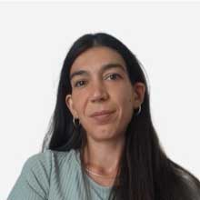
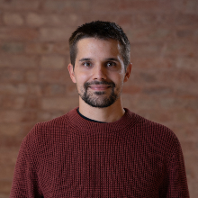
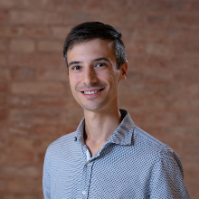
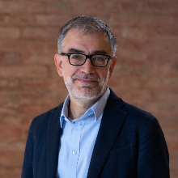
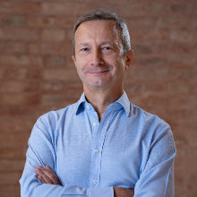
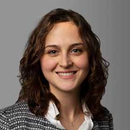
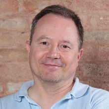
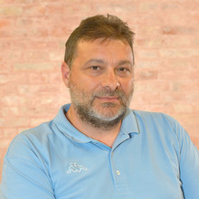

Angela Andreella
Social Statistics
So.Sta. brings together statisticians, social statisticians and sociologists working on complex social and health data. We develop and apply quantitative methods to study population health, ageing, inequalities, welfare, environmental determinants and the translation of evidence into policy.
So.Sta. stands for Social Statistics. In Italian, sosta also means a pause: a reminder to stop, look closely at the data, and think before acting.
Statistics, social statistics and sociology in one collaborative research group.








Models and inferential tools for dependent, hierarchical, high-dimensional and heterogeneous data, with an emphasis on valid and interpretable inference.
Ageing, morbidity and multimorbidity, health surveillance, territorial and socioeconomic inequalities, and environmental determinants of health.
Communication tools, accessible statistical outputs and interdisciplinary work designed to support public-health stakeholders and policy decisions.
So.Sta. members contribute to the Horizon Europe project connecting environmental and climate science, public health and social science to support evidence-based planetary-health policy.
So.Sta. is primarily rooted at Ca’ Foscari, while keeping an open collaborative network across institutions and disciplines.